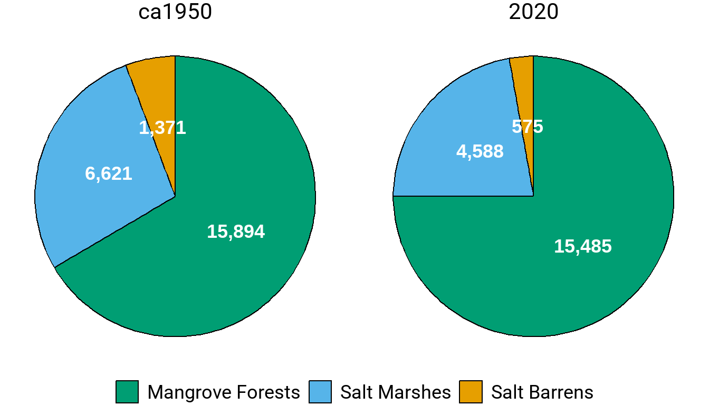
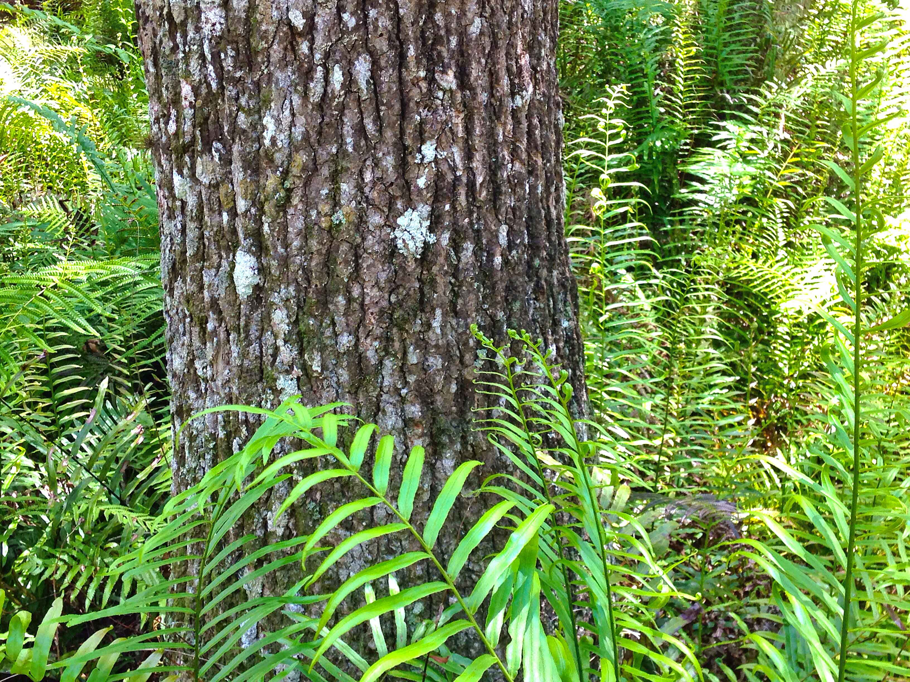

BH-1
Implement the Tampa Bay Habitat Master Plan
OBJECTIVES:
Implement the Tampa Bay Habitat Master Plan (2020 Update) to restore and protect key bay habitats under “Maximize the Potential” management paradigm, taking into account anticipated population growth, changing land use patterns, and impacts of climate change and sea level rise. Support research and monitoring necessary to meet data and information gaps for priority habitats targets. Continue to encourage restoration and protection of priority habitats, through acquisition and restoration programs.
STATUS:
Ongoing. Strategy revised to incorporate research, monitoring and recommendations from the Tampa Bay Habitat Master Plan (2020 Update), the Tampa Bay Tidal Tributaries Habitat Initiative, the Critical Coastal Habitat Assessment Program, and Climate Change Vulnerability Assessment. Action BH-10 is merged with this Action BH-1.
BACKGROUND:
The Tampa Bay Estuary Program and its partners have made significant progress in restoring and protecting key coastal habitats in Tampa Bay. This work is guided by the Tampa Bay Habitat Master Plan (2020 Update), and tracked in the Habitat Restoration and Protection Database.

The first Tampa Bay Habitat Master Plan, completed in 1996, set targets for restoration and protection of mangrove forests, salt marsh, low-salinity habitat in tidal tributaries, isolated small wetlands important as forage areas for estuarine-nesting birds and salt barrens, and introduced the management paradigm of “Restoring the Balance” (Lewis III and Robison 1995). This paradigm recommended the restoration of priority coastal habitats to similar proportions as they occurred historically (circa 1950), to provide a full mosaic of habitats necessary to support fish and wildlife throughout their life cycles. It recognized that some habitats have been lost in greater proportions than others and prioritized their protection and restoration. The 1996 Habitat Master Plan was updated in 2010 (Robison 2010).
Lewis III, R. R., and D. Robison. 1995. “Setting Priorities for Tampa Bay Habitat Protection and Restoration: Restoring the Balance.” 09-95. St. Petersburg, Florida: Tampa Bay Estuary Program. https://drive.google.com/file/d/1P5QdzginXe7y94TmvuEhoN8yPt2Yi9sz/view?usp=drivesdk.
Robison, D. 2010. “Tampa Bay Estuary Program Habitat Master Plan Update.” 06-09. St. Petersburg, Florida: Tampa Bay Estuary Program. https://drive.google.com/file/d/13iVkFKFG_EMNGwRWdgPPZfCL5JlatNcr/view?usp=drivesdk.
The Habitat Master Plan (2020 Update) incorporates all of the components recommended in Activity BH-1.1, including a Practical Guide for Habitat Restoration and a reassessment of the “Restoring the Balance” management paradigm (Robison et al. 2020). The 2020 plan establishes 2030 protection and restoration targets and longer-term 2050 goals for Tampa Bay critical coastal habitats. The target setting approach used in this update, termed the “Maximizing the Potential” (MTP) approach, is both retrospective and prospective. It is informed by past changes, as determined through a three-decade habitat change analysis, and over forty years of habitat restoration experience in the region. It is also primarily focused on what is possible today and the projected needs for the future, rather than replicating past ecological conditions. The new paradigm accounts for future stressors – especially sea level rise, climate change, and watershed development – in the target setting process. Furthermore, numeric targets are “place-based,” meaning that they are based on actual “opportunity areas” that can be mapped in the watershed.

Priority natural habitats in Tampa Bay include:
- Seagrass meadows
- Emergent tidal wetlands (Mangrove forests, Salt marshes, Salt barrens)
- Tidal flats
- Oyster reef/bars
- Hard bottom
- Tidal tributaries, creeks and rivers
- Native uplands
- Freshwater wetlands
The Surface Water Improvement and Management (SWIM) Program of the Southwest Florida Water Management District (SWFWMD) is a lead architect of habitat restoration in Tampa Bay. Since 1989, SWIM has implemented 96 coastal restoration projects with cooperators, restoring 4,617 acres (7.2 square miles) of coastal habitats. This work has created substantial oligohaline and salt barren habitats, priorities identified in the Habitat Master Plan. An Updated SWIM Plan for Tampa Bay was adopted in 2023 (Garcia, Anastasiou, and Robison 2023).
Garcia, L., C. Anastasiou, and D. Robison. 2023. “Tampa Bay Surface Water Improvement and Management (SWIM) Plan Update.” Brooksville, Florida: Southwest Florida Water Management District. https://www.swfwmd.state.fl.us/sites/default/files/medias/documents/tampa_bay_swim_plan_finalforgb_10242023_0.pdf.
Research is underway to better understand tidal creeks and the historic and current areal extents of tidal flats, oyster reefs and hard bottom habitats. New monitoring and mapping approaches and techniques to capture large- and small-scale changes in coastal marshes and mangrove forests are being developed to better understand and potentially mitigate for climate change. Results from these ongoing projects will help managers set restoration and protection targets for tidal flats, oyster reef, hard bottom habitats and tidal tributaries, and better evaluate and track progress toward achieving targets for mangroves and coastal marshes.
Habitat data assessment needs are identified in the Habitat Master Plan (2020 Update), and programs are recommended to address specific data gaps for: 1) hard bottom; 2) oyster bars; 3) tidal tributaries; 4) coastal uplands; and 5) reclaimed mined lands. Improvements to ongoing monitoring of the status and trends of subtidal, intertidal and supratidal habitats are also recommended.
Standardized nomenclature to describe critical coastal habitats was developed for the Habitat Master Plan (2020 Update) grouping habitats into subtidal (seagrasses, tidal flats, oyster bars, hard bottom, and artificial reefs), intertidal (mangrove forests, salt marshes, salt barrens, tidal tributaries, and living shorelines), and supratidal (coastal uplands, non-forested freshwater uplands, forested freshwater uplands, and native uplands). TBEP has set 2030 restoration and protection targets and longer-term 2050 goals for these Tampa Bay critical coastal habitats.

Subtidal Habitats
Seagrasses are keystone species in Tampa Bay. Their lush meadows provide food, create habitat, stabilize bay bottom, filter nutrient pollution and reduce wave action and coastal erosion. They may also play an important role in creating micro-refugia from ocean acidification (see Action CC-2). Seagrasses require sufficient water clarity to receive sunlight. In Tampa Bay, water clarity is mostly affected by the density of suspended microscopic algae, which in turn is directly related to the availability of the most limiting nutrient — nitrogen. Between the 1950s and early 1980s, Tampa Bay lost nearly 20,000 acres of seagrass, mainly due to nutrient pollution and dredging.
In 1995, Tampa Bay Estuary Program set a baywide restoration target of 38,000 acres for seagrasses and implemented a strategy to improve water quality by reducing nitrogen inputs into the bay (see Action WQ-1). Between 1992 and 2021, this partnership implemented 496 nitrogen load reduction projects through a combined $836 million investment that precluded 950.3 tons/year of nitrogen (TN) from entering Tampa Bay. Baywide nutrient loads declined and water clarity improved to the equivalent of the 1950s period and seagrass coverage reached a peak of 41,655 acres in 2016. The Habitat Master Plan (2020 Update) set a target and goal of 40,000 acres.
By 2022, the bay had only 30,137acres of seagrasses, a significant decrease of 11,518 acres even though water quality standards were met in all bay segments except Old Tampa Bay. TBEP and partners continue to investigate major drivers causing this loss and make significant investments towards implementing projects (see Action WQ-3). Seagrass communities remain vulnerable to environmental variability and human impacts. Continued biennial mapping of bay-wide seagrass coverage is necessary to identify and protect sensitive and impacted areas (see Action BH-8). Several studies have been conducted to support development of a Tampa Bay Seagrass Restoration and Protection Master Plan (developed as an element of the Habitat Master Plan), including a detailed analysis of historic seagrass change, species composition and condition throughout the bay, refined estimates of light requirements, estimates of wave energy and development of an initial bio-optical model. In addition, the relationship between longshore sand bars and seagrass has been studied and seagrass management areas have been established.

Tidal flats are non-vegetated intertidal bay habitats composed of sand and organic sediments. They are found primarily along low-energy shorelines and sheltered backwaters. Tidal flats host dense assemblages of benthic invertebrates, which are an important food source for shorebirds and wading birds. SWFWMD has classified tidal flats as part of their biannual seagrass mapping work; however, this effort did not consistently distinguish tidal flats from other non-vegetated estuarine shorelines. In 2015, SWFWMD employed new standards for photo-interpreting and characterizing tidal flats. This improved approach is expected to yield more accurate estimates of the distribution and areal extent of tidal flats. The 2030 target is 16,220 acres.
Hard bottom habitats support a diverse assemblage of invertebrates and fish. Oyster reefs provide food and habitat, reduce erosion, stabilize shorelines and improve water quality. Together, these habitats are relatively rare and sparsely distributed in the bay. No comprehensive map of hard bottom habitats in Tampa Bay exists. In 2015, SWFWMD employed new, more accurate standards for interpreting hard bottom and oyster reefs from aerial photography, as well as new survey techniques including sidescan sonar and underwater video. Expansion of hard bottom and oyster reef mapping bay-wide is needed. The 2030 protection and restoration targets for hard bottom and oyster reef habitats are 423 acres and 221 acres, respectively (see Action BH-4).
Intertidal Habitats
Emergent tidal wetlands (mangrove forests, salt marshes, salt barrens) occur primarily along the intertidal perimeter of the bay and its tidal tributaries, and include mangrove forests, salt marshes and salt barrens. They provide food and habitat for hundreds of species of bay fish and wildlife, stabilize shoreline sediments and reduce erosion, and filter pollutants from runoff. Dominant threats to emergent tidal wetlands are dredge and fill activities, sea level rise and modifications to bay hydrology. The 2023 Economic Valuation of Tampa Bay estimates the flood protection value of saltwater wetlands of Tampa Bay at $924.4 million in avoided damage to real property over 30 years (Todd, Walsh, and Neville 2023).
Todd, A., H. Walsh, and J. Neville. 2023. “2023 Economic Valuation of Tampa Bay.” 09-23. St. Petersburg, Florida: Tampa Bay Estuary Program. https://drive.google.com/file/d/15zetRgrFKkWah9KAY1in7q0so8ywHzkA/view?usp=drive_link.

From 1950-1990, almost 21 percent (4,984 acres) of emergent tidal wetlands were lost in Tampa Bay, with salt marshes and salt barrens showing the most disproportionate losses. Between 1990-2020, the areal extent of emergent tidal wetlands increased by about 12% (2,177 acres), with mangroves showing the greatest increase (1,963 acres, 15%), followed by salt barrens (107 acres, 23%) and salt marshes (107 acres, 2%). More than 1,000 acres and 1,000 linear feet of coastal habitat have been restored through the Tampa Bay Environmental Restoration Fund (TBERF). Over time, the relative proportion of mangroves in the bay has increased, while the proportions of salt marsh and salt barren have decreased. Rising sea level is expected to continue to drive these coastal habitat shifts with acreages of mangrove forests increasing at the expense of salt marshes and salt barrens (see Action CC-1) (Sherwood and Greening 2014).
Sherwood, E., and H. Greening. 2014. “Potential Impacts and Management Implications of Climate Change on Tampa Bay Estuary Critical Coastal Habitats.” Environmental Management 53 (3): 401–15. https://doi.org/10.1007/s00267-013-0179-5.
TBEP and its partners set 2030 restoration and protection targets for all three emergent tidal wetland habitats in the Habitat Master Plan (2020 Update), including 15,300 acres of mangrove forests, 546 acres of salt barrens, and 4,807 acres of salt marshes.
Tidally influenced tributaries and streams support fisheries production, nutrient cycling, wading bird foraging and flood prevention (see Action BH-9). The Tampa Bay watershed hosts about 1,400 linear miles of tributaries, creeks and rivers; however, the extent of tidal reach in these water bodies is not comprehensively documented. Baseline research is needed to quantify the total linear miles of tidal tributaries and how they will change with sea level rise, water and land use changes. The 2030 restoration and protection target for tidal tributaries is 4 miles.
The Tampa Bay Tidal Tributaries Habitat Initiative was launched in 2010 to study the health and function of tidal tributaries. Highly variable environmental conditions among tributaries make setting a single optimum water quality criterion difficult. Instead, habitat status may be better characterized by the status of fish populations, or some other biological indicator (see Action BH-9). A 2012 study funded by TBEP identified hundreds of structures in tidal tributaries that potentially block or impede tidal flows and fish movement. Additional work to develop biological criteria, monitor fish and wildlife, and prioritize tributaries for restoration was completed in 2019 (Wessel et al. 2021).
Wessel, M. R., J. R. Leverone, M. W. Beck, E. T. Sherwood, J. Hecker, S. West, and A. Janicki. 2021. “Developing a Water Quality Assessment Framework for Southwest Florida Tidal Creeks.” Estuaries & Coasts 45: 17–37. https://doi.org/10.1007/s12237-021-00974-7.
Supratidal Habitats
Forested wetlands, such as cypress and maple swamps, and non-forested “grassy” wetlands dominated by rushes and low-profile plants provide significant ecosystem services. Healthy wetlands “fix” or capture carbon dioxide and mitigate the effects of climate change. Freshwater wetlands also filter pollutants including nitrogen, reduce flooding and erosion and recharge groundwater.

Freshwater wetlands support more than 80 species of terrestrial and aquatic fish and wildlife. Small, isolated wetlands are especially important for amphibian populations — and are often most at risk for degradation, since wetlands smaller than a half-acre are currently not protected by regulations. Waterbirds and wading birds are particularly dependent on freshwater wetlands. Resident wading birds such as heron, ibis, egrets and endangered wood storks depend on the bay’s freshwater marshes year-round; they also host significant wintertime bird populations.

Over the past century, urban development and agricultural production have negatively impacted freshwater wetlands in the Tampa Bay watershed. From 1950–2007, the Tampa Bay area suffered a net loss of more than one-third of its freshwater wetlands, amounting to more than 100,000 acres. Non-forested wetlands were disproportionately lost. While direct impacts from development account for the majority of these losses, indirect impacts such as groundwater and surface water withdrawals for urban and agricultural use have also degraded wetlands.
The Habitat Master Plan 2020 Update (Robison et al. 2020) supersedes the 2014 Freshwater Wetland Habitat Master Plan (Ries and Scheda 2014), so former Action BH-10 is now merged with this Action BH-1. The Habitat Master Plan (2020 Update) specifies restoration and protection targets for forested and non-forested freshwater wetlands, as follows:
Robison, D., T. Ries, J. Saarinen, D. Tomasko, and and C. Sciarrino. 2020. “Tampa Bay Estuary Program: 2020 Habitat Master Plan Update.” 07-20. St. Petersburg, Florida: Tampa Bay Estuary Program. https://drive.google.com/file/d/1Hp0l_qtbxp1JxKJoGatdyuANSzQrpL0I/view?usp=drivesdk.
Ries, T., and S. Scheda. 2014. “Master Plan for the Protection and Restoration of Freshwater Wetlands in the Tampa Bay Watershed, Florida.” 05-14. St. Petersburg, Florida: Tampa Bay Estuary Program. https://drive.google.com/file/d/1NjExx3M63zmypXN9D1Yc7DNkVpS-8FFm/view?usp=drivesdk.
- The baywide restoration and protection target for 2030 is 68,937 acres of non-forested freshwater wetlands and 152,282 acres of forested freshwater wetlands.
- The baywide restoration and protection goal for 2050 is 71,787 acres of non-forested freshwater wetlands and 152,732 acres of forested freshwater wetlands.
The Habitat Master Plan (2020 Update) determined that these specific targets were achievable and best accomplished through a combination of publicly financed restoration and privately funded compensatory mitigation. Regulatory permitting agencies have committed to using the Habitat Master Plan to identify and require mitigation of historic wetland conditions. To encourage restoration of non-forested wetlands, mitigation required for development can be directed to grassy systems if applicants can demonstrate that they previously existed in that location. This provides both flexibility and cost-savings for regulatory agencies and permittees, while supporting bay-wide restoration goals.
There is a need to provide education and guidance to environmental professionals on how to best use the Habitat Master Plan’s recommendations and tools for wetland mitigation. Pinellas County’s Stormwater Manual provides an innovative model for incorporating wetlands into an integrated stormwater management plan.
Since 1991, SWFWMD’s SWIM Program has routinely incorporated both estuarine and freshwater wetlands into their habitat mosaic designs as components of stormwater treatment — while simultaneously establishing freshwater wetlands, oligohaline habitats, and salinity gradients important for fisheries production. The SWIM Plan Update adopted in 2023 includes freshwater wetland restoration targets.
A 2017 study of the long-term viability of constructed freshwater wetlands in Hillsborough County highlights the importance of factors such as design, location in the landscape, and on-going maintenance in the long-term structure and function of constructed wetlands (Brown 2017). Understanding and calibrating designs to future conditions under climate change may also promote long-term success of restorations.
Brown, A. 2017. “Freshwater Wetland Creation in a Changing Urban Environment: Designing for Long-Term Viability.” PhD thesis, St. Petersburg, Florida: University of South Florida.
Forested wetlands also warrant preservation, enhancement and restoration. Old-growth cypress swamps in the bay watershed are largely gone, while younger forests are more common. Cypress trees are slow-growing, vulnerable to hydrologic changes, and provide critical habitat for creatures as diverse as the alligator gar, river otter, wood duck, and limpkin.

Coastal Uplands occur just landward of emergent tidal wetlands, and include mesic flatwoods and hydric hammocks. They provide habitat for a variety of bay wildlife and are important buffers between tidal wetlands and urban and agricultural development. More than 100 acres of coastal upland have been restored in Tampa Bay through the TBERF. The 2030 restoration and protection target for coastal uplands is 3,769 acres.
Native Uplands host a variety of native terrestrial plant communities, including dry prairies, native grasslands, upland coniferous forests (e.g., pine flatwoods), and upland hardwood forests (e.g., oak hammocks). Between 1990 and 2017, 39% of Native Uplands were lost, primarily due to land development. The SWIM Program has promoted the restoration of various native upland communities, restoring almost 2,000 acres of pine flatwoods, hardwood hammocks, mixed pine-hardwood forests and grassed prairies. Improved quantitative assessments are needed to develop restoration and protection targets for coastal uplands. The 2030 restoration and protection target for Native Uplands is 140,600 acres.
Climate Change and Sea Level Rise
TBEP evaluated and published potential impacts and management implications of climate change on critical coastal habitats. Modeled changes to temperatures and sea level showed that mangrove forests will dominate the overall proportions of future coastal habitats, whereas proportions of salt marshes, salt barrens and coastal freshwater wetlands will decline. Increasing the resilience of coastal habitats and providing them with room to migrate upslope are among the recommended strategies for coping with climate change. The SWIM program already is implementing restoration projects designed to boost the resilience of coastal habitats and help accommodate projected sea level rise.
The Critical Coastal Habitat Assessment (CCHA) Program was developed by TBEP to track long-term changes that may occur as a result of sea level rise and climate change (Price, Loy, and Robison 2017). The monitoring plan incorporates a hierarchical approach to allow for multiple scales of inference to be made. The CCHA project established nine long-term monitoring transects - from the open water edge through emergent tidal wetlands to coastal uplands - on both natural and developed portions of the Tampa Bay coastline. Assessments occur every 3-5 years, with the third assessment initiated in 2023 (see CC-1).
Price, R., D. Loy, and D. Robison. 2017. “Phase 1: Critical Coastal Habitat Assessment: Baseline Monitoring Report.” 08-17. St. Petersburg, Florida: Tampa Bay Estuary Program. https://drive.google.com/file/d/122AvajD3fxOVORHfO5HQUMdXkLNoQm48/view?usp=drivesdk.

Land Acquisition and Protection
The first Tampa Bay Habitat Master Plan identified 28 sites for acquisition, protection, management and/or restoration. Of those, 19 were purchased and 10 have undergone restoration activities. Both SWFWMD and Hillsborough County (through the Jan K. Platt Environmental Lands Acquisition and Protection Program) have acquired lands on the master list. The Master Plan (2010 Update) inventoried public and private parcels in the Tampa Bay watershed that should be prioritized for restoration efforts. Public sites included 12 in Pinellas County, 18 in Manatee County and 19 in Hillsborough County.
The Habitat Master Plan (2020) carries forward the 2010 recommendation to develop a federal-state-local-private partnership to provide the framework for linking watershed-level planning goals for restoration with federal, state and local wetland compensatory mitigation. It further recommends improving coordination between regulatory and resource management programs in the Tampa Bay watershed through the TBEP Habitat Restoration Consortium.
Coastal land available for restoration and acquisition is dwindling as development expands. Accordingly, projects further up in the watershed are gaining importance. This shift in focus recognizes that habitats — such as tidal tributaries and freshwater wetlands far removed from the bay proper — are critical to its health and is consistent with the need to move up slope to accommodate rising sea levels.